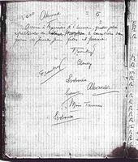
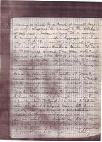

Home
Project History
Our Texts
The Alexander Richard Svoboda Travel Journals
The Joseph Mathia Svoboda Diaries
Print Books and Printable PDFs
Electronic Editions (e-pub, e-readers)
Svobodapedia
People
Staff
Interns
Collaborators
Tools and Technology
Autotagger
Acknowledgments
Resources
Images
Special Bibliography
Contribute
Staff Pages
Newsletters
Supporters
Alexander's Travel Journals
Journey to Europe by Land via Damascus and Beirut
Side by Side English Arabic

Return Journal
Original Text PDF
